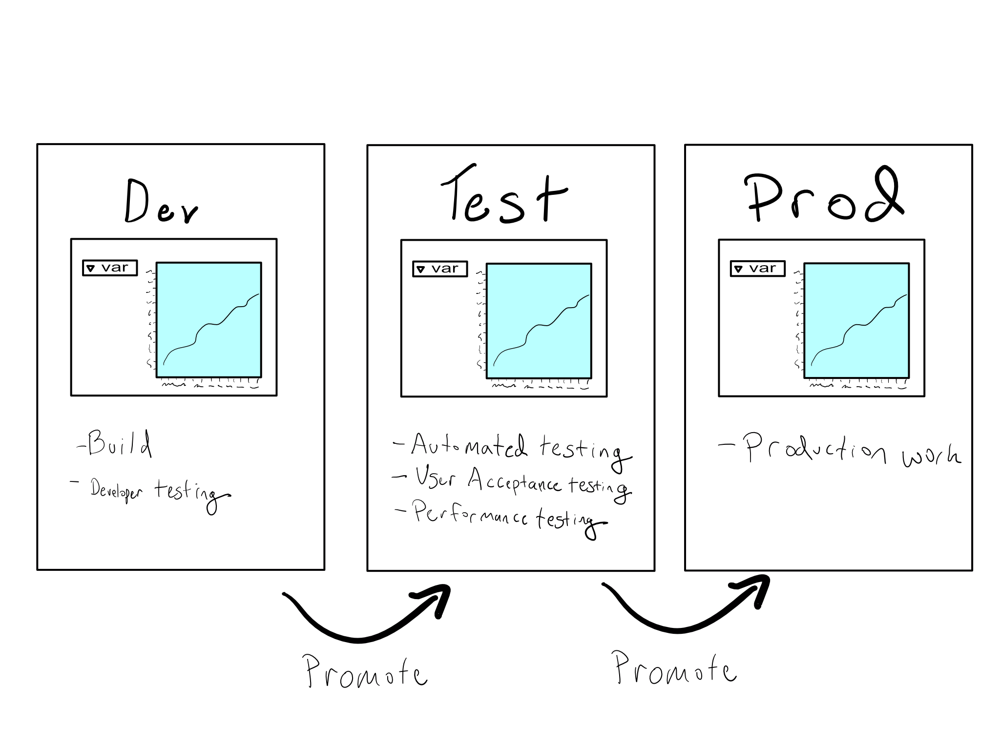
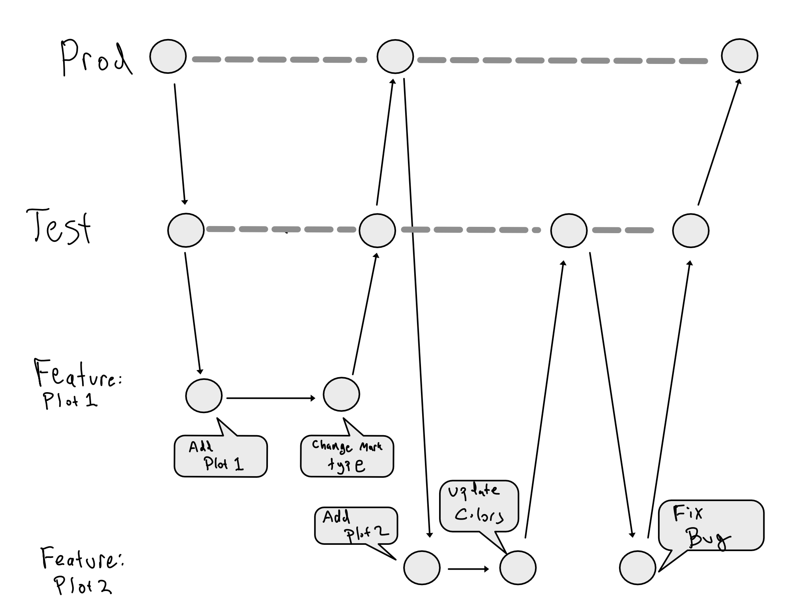

library(shiny)
# UI that's just a button
ui <- fluidPage(
actionButton("button", "Press Me!")
)
# Do something on button press
server <- function(input, output) {
observeEvent(
input$button,
httr::POST(
"www.my-external-system.com",
body = list(button_pressed = TRUE)
)
)
}
# Run the application
shinyApp(ui = ui, server = server)1 Code promotion and integration
If you’ve ever taken an app or report into production, you know the moment. You get a call, a text, a slack – “the app is down”. A bead of cold sweat runs down your back. Your world narrows to you and your agonizingly nonfunctional app that the CEO, of course, needs right now.
Basically all of DevOps is designed around preventing this moment.
Promotion workflows are the core of DevOps practices.
In this chapter in particular, we’ll be thinking about deployments – the moment something goes into production, whether that’s a new app entirely or an update to an existing app. You want this moment to be as smooth as possible. Thus, you want to ensure that deployments don’t happen unless they’re supposed to and that when a deployment happens, it is as seamless as possible, with minimal downtime in the live production system.
In this chapter, we’ll explore how to set up multiple environments so you can safely develop and test your app before going to production and how to design and execute a promotion workflow that makes your deployment completely seamless.
1.1 The Three Environments
The best way to ensure that things only get deployed when you mean them to – and sleep securely knowing that it won’t be disturbed – is to have standalone environments for development, testing, and production. Having separate environments and a plan for promoting content from one to the other is the core of workflows that de-risk pushing to production.
Usually, these environments are referred to as Dev, Test, and Prod.

The best way to ensure that deployments go smoothly is to make them as minimal and predictable as possible. This requires that the dev, test, and prod environments be very close mirrors of each other. We’ll get into how to accomplish that at the end of this chapter.
1.1.1 Dev for Data Science
Dev is a sandbox where people can install packages and try new things with no risk of breaking anything in production.
If you’re a data scientist, you probably have a really good idea what your Dev environment looks like. It’s probably a Jupyter Notebook or an IDE with data science capabilities like RStudio, Spyder, or PyCharm. You use this environment to do exploratory data analysis, try out new types of charts and graphs, and test model performance against new features that you might design. This is really different than what most IT/Admins imagine is happening in Dev.
For a pure software engineering project, the Dev environment isn’t about exploration and experimentation – it’s about building. The relationship between data science and software engineering is akin to the difference between archaeology and architecture. Data science is about exploring existing relationships and sharing them with others once they’ve been discovered. The path is often meandering – and it’s usually not clear whether it’s even a possible one when you start. In contrast, pure software engineering is like designing a building. You know from the beginning that you’re designing a building for a particular purpose. You might need a little exploration to ensure you’ve thought through all of the nooks and crannies, or that you’ve chosen the right materials, or that you’re going to stay on budget, but you’ll have a pretty good idea up front whether it’s possible to design the building you want.
This means that Dev environments look really different for a data scientist versus a software engineer.
The biggest difference is that most IT/Admins are going to think of Dev, Test, and Prod being three identical copies of the same environment. That’s close to what you need as a data scientist, but really it’s more like you need a sandbox, a test environment, and prod. That means that if you’re using a deployment platform like RStudio Connect or Dash Enterprise, you probably don’t need it in your Dev environment, and that you don’t need your development tool in Test or Prod (any changes should go back through the deployment pipeline).
1.1.2 Test and Prod
Test is (unsurprisingly) an environment for testing. Depending on the type of asset you’re developing, the test environment might incorporate testing that you do, testing by outside entities like security, and/or performance testing. Generally, the test environment facilitates User Acceptance Testing (UAT), where you can investigate whether labels and buttons are clear or whether plots and graphs meet the need. Depending on your organization, test might be collapsed with dev, it might be a single environment, or it could be multiple environments for the different types of testing.
Prod is the gold standard environment where things run without any manual human intervention. Usually the only way to get things into prod is through some type of formalized process – sometimes backed by a computer process like a git merge or push from a Continuous Integration/Continuous Deployment (CI/CD) platform (more on that below). One of the most important ways to keep prod stable is that nothing changes in prod other than via a simple promotion from the test environment.
1.1.3 Protecting Prod Data
One of the biggest risks during the dev and test parts of an assets lifecycle is that you might mess up real data during your work. In a software engineering context, it’s common to use completely fake data or for the app to be the data generation tool.
In contrast, data science is all about using and learning from your organization’s actual data. So a dev environment that doesn’t include access to your organization’s real data is going to be completely useless if it doesn’t have real data in it. This is often a difficult thing to convince an IT/Admin of.
In many cases, data science assets and reports are read-only. If you’re mostly building visualizations or dashboards that just consume the business data, perhaps clean it for analytics purposes, you can happily accept a read-only connection to your organization’s data.1 In this case, it works just fine to connect to your real data from your Dev and Test environments and create graphs, models, and dashboards based on the real data, testing out new visualizations and model features in a safe sandbox while the existing version of your app or report runs smoothly in prod.
On the other hand, if your app or report actually writes data, you’ll have to be a little more clever. In general, you’ll have to figure out how to redirect your apps output into a test data store, or to mock responses from the real services you’re interacting with. The easiest way to do this is by including your output locations as variables inside your code and then setting them at runtime based on an environment variable. See below for an example of how to do this.
1.2 Taking data science to production with CI/CD
The common term for the mechanics of code promotion is Continuous Integration/Continuous Deployment (CI/CD).
CI/CD is about moving your data science projects, including code, data, and environment, into successively more formal states of production. While it’s not a requirement to use source control to make this happen, the mechanics of CI/CD is usually tightly linked to source control procedures.
1.2.1 A Rough Intro to Git
If you’re not already familiar, I’d suggest spending some time learning git. If you’re just starting, you’re in for a bit of a ride.
People who say git is easy are either lying to look smarter or learned so long ago that they have forgotten how easy it is to mess up your entire workflow at any moment.
I’m not going to get into the mechanics of git in this book– what it means to add, commit, push, pull, merge, and more. There are lots of great resources out there that I’m not aiming to reproduce.
If you don’t already know git and want to learn, I’d recommend HappyGitWithR by Jenny Bryan. It’s a great on-ramp to learn git.
Even if you’re a Python user, the sections on getting started with git, on basic git concepts, and on workflows will be useful since they approach git from a data science perspective.
I will provide a quick git cheatsheet for memory purposes, and I will talk about some git strategies that match well with using git to execute a data science code promotion strategy.
1.2.1.1 Git Cheatsheet
| Command | What it Does |
|---|---|
git clone <remote> |
Clone a remote repo – make sure you’re using SSH URL. |
git add <files/dir> |
Add files/dir to staging area. |
git commit -m <message> |
Commit your staging area. |
git push origin <branch> |
Push to a remote. |
git pull origin <branch> |
Pull from a remote. |
git checkout <branch name> |
Checkout a branch. |
git checkout -b <branch name> |
Create and checkout a branch. |
git branch -d <branch name> |
Delete a branch. |
For production data science assets, I generally recommend long-running dev (or test) and prod branches, with feature branches for developing new things. The way this works is that new features are developed in a feature branch, merged into dev for testing, and then promoted to prod when you’re confident it’s ready.
For example, if you had two new plots you were adding to an existing dashboard, your git commit graph might look like this:

CI/CD adds a layer on top of this. CI/CD allows you to integrate functional testing by automatically running those tests whenever you do something in git. These jobs can run when a merge request is made, and are useful for tasks like spellchecking, linting, and running tests.
For the purposes of CI/CD, the most interesting jobs are those that do something after there’s a commit or a completed merge, often deploying the relevant asset to its designated location.
A CI/CD integration using the same git graph as above would have released 3 new test versions of the app and 2 new prod versions. Note that in this case, the second test release revealed a bug, which was fixed and tested in the test version of the app before a prod release was completed.
In years past, the two most popular CI/CD tools were called Travis and Jenkins. By all accounts, these tools were somewhat unwieldy and difficult to get set up. More recently, GitHub – the foremost git server – released GitHub Actions (GHA), which is CI/CD tooling directly integrated into GitHub that’s free for public repositories and free up to some limits for private ones.
It’s safe to say GHA is eating the world of CI/CD.2
For example, if you’re reading this book online, it was deployed to the website you’re currently viewing using GHA. I’m not going to get deep into the guts of GHA, but instead talk generally about the pattern for deploying data science assets, and then go through how I set up this book on GHA.
1.2.2 Using CI/CD to deploy data science assets
In general, using a CI/CD tool to deploy a data science asset is pretty straightforward. The mental model to have is that the CI/CD tool stands up a completely empty server for you, and runs some code on it.
That means that if you’re just doing something simple like spellchecking, you can probably just specify to run spellcheck. If you’re doing something more complicated, like rendering an R Markdown document or Jupyter Notebook and then pushing it to a server, you’ll have to take a few extra steps to be sure the right version of R or Python is on the CI/CD server, that your package environment is properly reproduced, and that you have the right code to render your document.
Feel free to take a look through the code for the GitHub Action for this book. It’s all YAML, so it’s pretty human-readable.
Here’s what happens every time I make a push to the main branch of the repository for this book:3
- Checkout the current
mainbranch of the book. - Use the
r-libaction to install R. - Use the
r-libaction to setup pandoc (a required system library for R Markdown to work). - Get the cached
renvlibrary for the book. - Render the book.
- Push the book to GitHub Pages, where this website serves from.
You’ll see that it uses a mixture of pre-defined actions created for general use, pre-defined actions created by people in the R community, and custom R code I insert to restore an renv library and render the book itself.
1.3 Per-Environment Configuration
Sometimes you want a little more flexibility – for example the option to switch many the environment variables depending on the environment.
In R, the standard way to do this is using the config package. There are many options for managing runtime configuration in Python, including a package called config.
For example, let’s consider this shiny app. In this app, every time I press the button, the app sends a POST request to an external service indicating that the button has been pressed.
With the URL hardcoded like this, it’s really hard to imagine doing this in a Dev or Test environment.
However, with R’s config package, you can create a config.yml file that looks like this:
Then you can use an environment variable to the correct config and apply that configuration inside the app.4
library(shiny)
config <- config::get()
# UI that's just a button
ui <- fluidPage(
actionButton("button", "Press Me!")
)
# Do something on button press
server <- function(input, output) {
observeEvent(
input$button,
httr::POST(
config$url,
body = list(button_pressed = TRUE)
)
)
}
# Run the application
shinyApp(ui = ui, server = server)1.4 Creating and Maintaining Identical Environments
In the IT world, there’s a phrase that servers should be cattle, not pets. The idea here is that servers should be unremarkable and that each one should be more-or-less interchangeable. This matters, for example, in making sure your test and prod environments look exactly the same.
TODO: Notes on using virtual environments + Docker.
For example, doing test on a Windows laptop and then going to prod on a Linux server introduces a potential that things that worked in test suddenly don’t when going to prod. For that reason, making all three (or at least test and prod) match as precisely as possible is essential. The need to match these three environments so precisely is one reason for data science workloads moving onto servers.
A bad pattern then would look like this:
- I develop an update to an important Shiny or Dash app in my local environment and then move it onto a server.
- At that point, the app doesn’t quite work and I make a bunch of manual changes to the environment – say adjusting file paths or adding R or Python packages. Those manual changes end up not really being documented anywhere.
- A week later, when I go to update the app in prod, it breaks on first deploy, because the server state of the test and prod servers drifted out of alignment.
The main way to combat this kind of state drift is to religiously use state-maintaining infrastructure as code (IaC) tooling. That means that all changes to the state of your servers ends up in your IaC tooling and no “just login and make it work” shenanigans are allowed in prod.
TODO: Graphic - fixing problems using IaC tooling
If something breaks, you reproduce the error in staging, muck around until it works, update your IaC tooling to fix the broken thing, test that the thing is fixed, and then (and only then) push the updated infrastructure into prod directly from your IaC tooling.
1.5 Comprehension Questions
- Write down a mental map of the relationship between the three environments for data science.
- What are the options for protecting production data in a dev or test environment?
- Why is git so important to a good code promotion strategy? Can you have a code promotion strategy without git?
- What is the relationship between git and CI/CD? What’s the benefit of using git and CI/CD together?
1.6 Portfolio Exercise: Blog Automation
Many people in the data science community have personal websites or blogs. They’re a great way to show off your portfolio of work! You may even have one. But how is it built?
Many people build their blog locally and then just push it up to a website.
For this challenge, create a personal website if you don’t have one and configure it so that you can push changes to git and have them render to your website.
Here are a few suggestions on components you might use:
Build the website itself using quarto. Quarto is a library for scientific and technical publishing that makes it easy to include R or Python code if you want. It’s the tool this book was written with.
Deploy the website onto GitHub Pages. At least as of this writing, you can deploy a free website for your GitHub account or for any individual project in your account.
- By default, your website will have a github.io URL for now. If you want to change it, I’d suggest checking out Chapter 9 on networking for more information.
Use GitHub Actions to automate what happens when you push to your website. The GitHub repo for this book (akgold/do4ds) may prove useful as a reference.
In fact, you should probably feel grateful! It’s nice to know you can mess around as much as you want without risking any damage to real data.↩︎
It’s worth remarking that GitLab has long offered a very good CI/CD integration. I’m going to talk about GHA, since it’s the most popular, but you can accomplish these same things with GitLab CI/CD.
Lots of organizations have Azure DevOps, formerly known as Visual Studio Team Services. Microsoft, who owns Azure, acquired GitHub in 2018, so I’d expect Azure DevOps and GitHub to converge at some point…but who knows?↩︎
Recall that a finished merge request into the
mainbranch is equivalent to a push tomain.↩︎By default, the
R_CONFIG_ACTIVEvariable is used to determine which config to get. If you’re deploying to RStudio Connect, this value is locked to equalrsconnect, and you may want to use a different value, which you can do likeconfig::get(config = Sys.getenv("WHICH_CONFIG")).↩︎